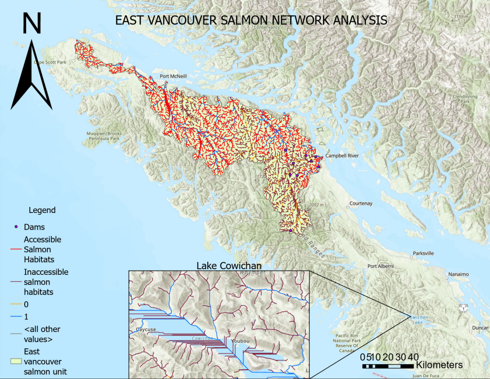
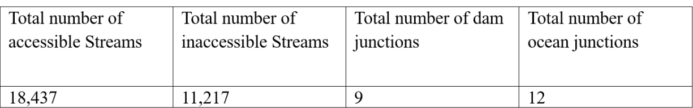

This project models Pacific salmon spawning habitat across Vancouver Island, British Columbia, using hydrological analysis and network tracing in ArcGIS Pro. A stream network was derived from a Digital Elevation Model (DEM), dams were modelled as barriers, and linear referencing was used to characterize stream segments by slope gradient and stream order. The network was then traced from the ocean to identify which stream segments are accessible to salmon and which are blocked by dams, with results filtered against basic habitat requirements.
| Layer | Description | Source |
|---|---|---|
vancouver_island_dem | 25 m DEM for Vancouver Island | UBC PostgreSQL Server |
vancouver_island_boundary | Vancouver Island boundary polygon | UBC PostgreSQL Server |
dams | Dam structures on Vancouver Island (polylines) | UBC PostgreSQL Server — BC Government |
| Conservation Units | Chinook, Chum, and Coho salmon conservation units | UBC PostgreSQL Server — Oceans and Fisheries Canada |
| Tool | Purpose |
|---|---|
| QGIS | Exporting the DEM from PostGIS to GeoTiff |
| ArcGIS Pro (Hydrology toolset) | Flow direction, flow accumulation, stream derivation |
| ArcGIS Pro (Network Analyst) | Trace network creation and upstream tracing |
| ArcGIS Pro (Linear Referencing) | Overlaying stream attributes along routes |
A stream network was derived from the Vancouver Island DEM using flow direction, flow accumulation, and a threshold of 1,000 accumulated cells. Stream segments were converted to routes and stored in a feature dataset. Topology rules were used to identify where dams and the island boundary intersect the stream routes, producing dam junction and ocean junction point layers. Slope gradient and stream order were extracted along routes using linear referencing and combined into a single overlay event table. A trace network was built to identify stream segments reachable from the ocean without crossing a dam. Finally, segments meeting salmon habitat criteria (1st–2nd order, gradient < 20%, ocean-accessible) were extracted as accessible habitat, with the inverse captured as inaccessible habitat.

Panel map showing stream routes by reachability, dam barriers, accessible and inaccessible habitat segments, and a zoomed-in view of Lake Cowichan

Summary table of total accessible streams, inaccessible streams, dam junctions, and ocean junctions